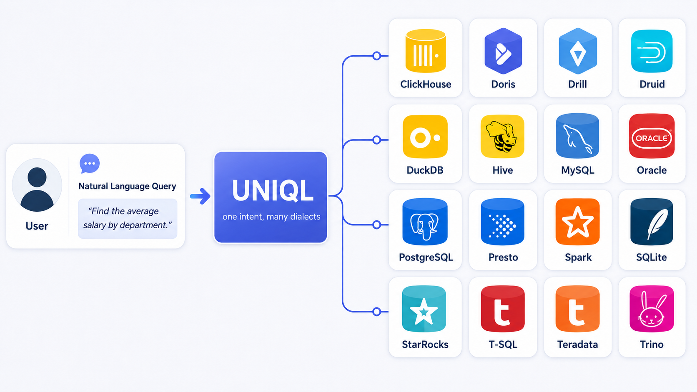

About UniQL
UniQL evaluates whether language models can generate executable, dialect-specific SQL for the same natural-language intent. It extends the BIRD development split from SQLite to a controlled multi-dialect setting where questions, schemas, database contents, and SQL annotations are aligned across engines.
UniQL-Full contains 1,534 questions and 24,544 executable SQL annotations over 16 SQL dialects: SQLite, ClickHouse, Doris, Drill, Druid, DuckDB, Hive, MySQL, Oracle, PostgreSQL, Presto, Spark, StarRocks, Teradata, Trino, and T-SQL.
UniQL-Minidev contains 256 cleanly annotated questions selected from UniQL-Full based on existing studies of annotation quality in BIRD-style text-to-SQL data.

News
- Jun. 2026: We release the UniQL leaderboard website with two evaluation tracks: UniQL-Full and UniQL-Minidev.
- Jun. 2026: UniQL-Minidev is added as a supplementary clean-annotation subset selected in response to known annotation issues in BIRD-style text-to-SQL data.
Surprise from UniQL
1. One intent, many SQL engines: each question is evaluated across 16 SQL dialects, making dialect transfer and dialect-specific SQL generation directly comparable.
2. Executable evaluation: predicted and reference SQL are executed on the same target database engine and compared under the UniQL protocol.
3. Clean-annotation reporting: UniQL-Minidev supports reporting on selected original BIRD questions in light of recent studies on BIRD annotation noise.
Data
Overall Leaderboard uses the UniQL-Full benchmark. UniQL-Minidev is a supplementary clean-annotation track selected from original BIRD development questions. UniQL download packages include SQL/query files and dialect schemas; please download the original database files from the BIRD Dev Set when needed.
- UniQL-Full Set: full benchmark files with dialect-specific schemas.
- UniQL-Minidev Set: selected minidev files with dialect-specific schemas.
- BIRD Dev Set: original BIRD development databases and related source files.
Submission
Please submit one evaluation-result JSON file per dialect. The maintainers recompute aggregate, difficulty, and construction-source metrics before updating the leaderboard.
Partial submissions are welcome and will be recorded on the leaderboard. Only submissions covering all 16 SQL dialects are included in the average-accuracy ranking.
- Run inference for each dialect using the UniQL prompt and selected data track.
- Run
evaluation/evaluate.pyto produce one evaluation-result JSON per dialect. - Package your files in a zip with
metadata.jsonand the result JSON files. - Open a GitHub issue using the leaderboard submission template and attach or link the package.
Submission Format
Submit the JSON files produced by evaluation/evaluate.py. Required fields for leaderboard
aggregation are sql_idx or question_id, and res.
[
{
"sql_idx": 0,
"res": true,
"timeout": false,
"error": null,
"predicted_sql": "SELECT ...",
"ground_truth_sql": "SELECT ...",
"dialect": "mysql"
}
]Local format check
This browser-side checker does not upload your file. It only verifies the basic JSON shape.
Citation
If you find UniQL useful, please cite our paper.
@inproceedings{uniql2026,
title = {UniQL: A Benchmark for Cross-Dialect Text-to-SQL Evaluation},
author = {TODO},
booktitle = {TODO},
year = {2026}
}Overall Leaderboard: UniQL-Full across all 16 SQL dialects.